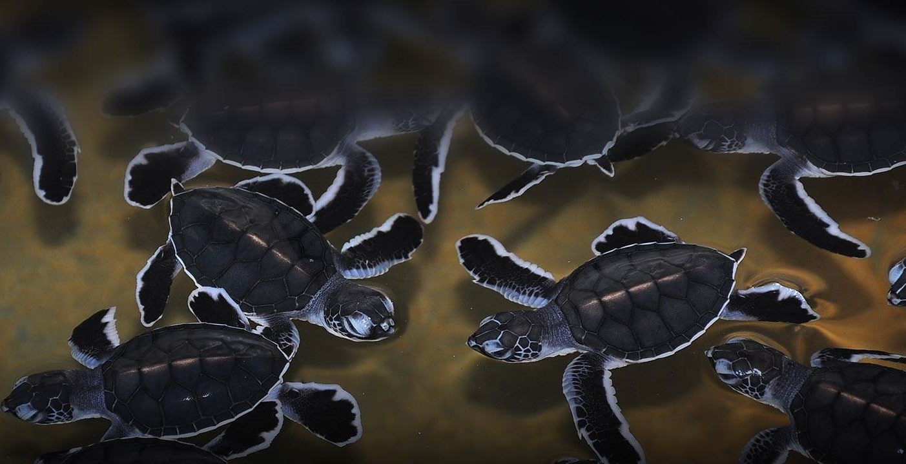
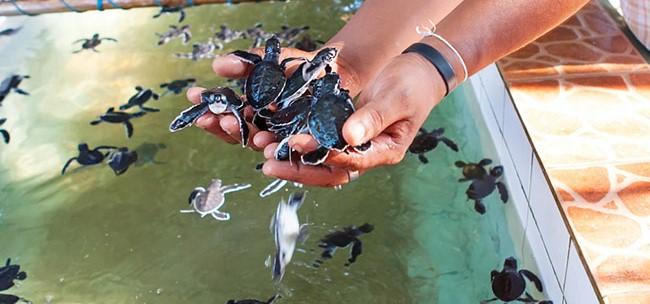
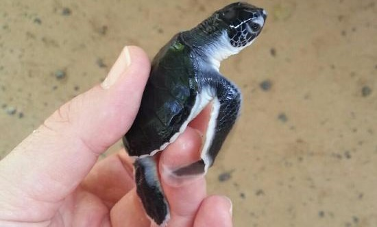

About Bentota Turtle Hatchery
The Bentota Turtle Hatchery, situated in Bentota, Sri Lanka, is a notable establishment dedicated to the conservation and protection of sea turtles.
The hatchery acts as a shelter for turtle eggs and hatchlings with a goal to protect this endangered species.
complex process of turtle nesting, egg incubation, and baby turtle discharge into the ocean can all be seen by visitors to the hatchery. Additionally,
the hatchery runs outreach initiatives and educational activities to support marine conservation.
The Bentota Turtle Hatchery makes a substantial contribution to sea turtle conservation and is essential in spreading awareness of the need for their protection.
  
Turtles in Bentota
Here are some of the Turtle species you can find at Bentota Turtle Hatchery:
- Green Turtle
- Hawksbill Turtle
- Loggerhead Turtle
- Olive Ridley Turtle
- Leatherback Turtle
 Go To Kosgoda
Go To Kosgoda
Conservation Efforts
At the heart of conservation efforts is Sri Lanka's Bentota Turtle Hatchery. The hatchery, which is dedicated to protecting sea turtles in danger of extinction, focuses on programs for releasing hatchlings and protecting nests. Their programs combine research, education, and community involvement with the goal of preserving the amazing sea turtle species and their fragile ecosystems for years to come.